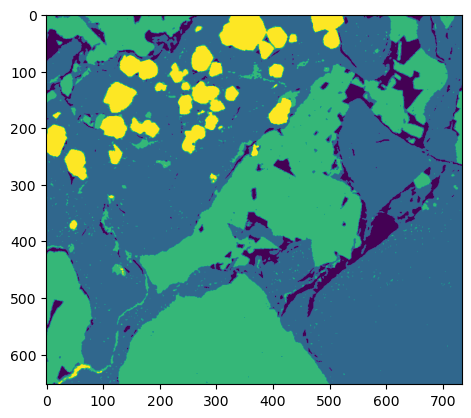
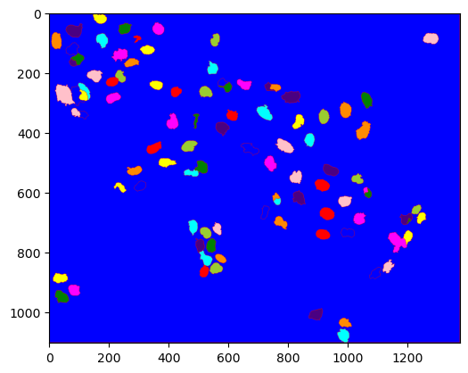

DIP-Introductory python tutorials for image processing(51-58)-Image Segmentation
学习自 Youtube 博主 DigitalSreeni。
文字数：---
正文
Tutorial 51 - What is image thresholding and segmentation
What is image segmentation? 什么是图像分割?
And how is it different than thresholding? 它和阈值法有什么不同?
Image segmentation is the process of partitioning a digital image into multiple segments(image objects).
- 图像分割是将一幅数字图像分割成多个段(图像对象)的过程。
Image thresholding is a simple form of image segmentation, it is a way to create a binary image based on setting a threshold value on the pixel intensity of the original image.
- 图像阈值分割是图像分割的一种简单形式，它是在原始图像的像素强度上设置一个阈值的基础上创建一个二值图像的方法。
OpenCV —— 阈值分割（直方图技术法，熵算法，Otsu，自适应阈值算法）
1 | |
<matplotlib.image.AxesImage at 0x15586e075e0>
- Separate blue channels as they contain nuclei pixels (DAPI).
- 分开蓝色通道，因为它们包含核像素(DAPI)。
1 | |
<matplotlib.image.AxesImage at 0x20c6bc29a60>
1 | |
(array([8.12033e+05, 3.47050e+04, 2.10950e+04, 3.48210e+04, 4.78370e+04,
1.07928e+05, 5.22380e+04, 4.82100e+04, 4.30030e+04, 3.66300e+04,
5.45780e+04, 2.04160e+04, 1.62930e+04, 1.28170e+04, 1.05070e+04,
1.52520e+04, 5.43100e+03, 4.38900e+03, 3.60500e+03, 2.90800e+03,
4.45800e+03, 1.71800e+03, 1.54000e+03, 1.34400e+03, 1.21900e+03,
2.06400e+03, 9.29000e+02, 8.15000e+02, 8.25000e+02, 7.36000e+02,
1.44100e+03, 6.95000e+02, 6.53000e+02, 6.37000e+02, 6.56000e+02,
1.30700e+03, 6.35000e+02, 6.70000e+02, 6.42000e+02, 6.53000e+02,
1.44100e+03, 7.63000e+02, 7.41000e+02, 8.87000e+02, 8.89000e+02,
1.84300e+03, 1.05800e+03, 1.03700e+03, 1.06800e+03, 1.09200e+03,
2.30900e+03, 1.16800e+03, 1.22000e+03, 1.28600e+03, 1.33500e+03,
2.73900e+03, 1.33800e+03, 1.43900e+03, 1.44000e+03, 1.51700e+03,
2.97600e+03, 1.54400e+03, 1.50600e+03, 1.54700e+03, 1.53600e+03,
3.21800e+03, 1.54400e+03, 1.64800e+03, 1.61200e+03, 1.61200e+03,
3.08900e+03, 1.53400e+03, 1.50400e+03, 1.53300e+03, 1.50700e+03,
2.88000e+03, 1.45900e+03, 1.38300e+03, 1.37400e+03, 1.38100e+03,
2.67000e+03, 1.33800e+03, 1.24400e+03, 1.22500e+03, 1.16200e+03,
2.38500e+03, 1.17100e+03, 1.13000e+03, 1.08200e+03, 1.04700e+03,
2.03100e+03, 1.03800e+03, 9.89000e+02, 9.92000e+02, 8.93000e+02,
1.78600e+03, 8.82000e+02, 7.94000e+02, 7.79000e+02, 1.52600e+03]),
array([ 0. , 1.2, 2.4, 3.6, 4.8, 6. , 7.2, 8.4, 9.6,
10.8, 12. , 13.2, 14.4, 15.6, 16.8, 18. , 19.2, 20.4,
21.6, 22.8, 24. , 25.2, 26.4, 27.6, 28.8, 30. , 31.2,
32.4, 33.6, 34.8, 36. , 37.2, 38.4, 39.6, 40.8, 42. ,
43.2, 44.4, 45.6, 46.8, 48. , 49.2, 50.4, 51.6, 52.8,
54. , 55.2, 56.4, 57.6, 58.8, 60. , 61.2, 62.4, 63.6,
64.8, 66. , 67.2, 68.4, 69.6, 70.8, 72. , 73.2, 74.4,
75.6, 76.8, 78. , 79.2, 80.4, 81.6, 82.8, 84. , 85.2,
86.4, 87.6, 88.8, 90. , 91.2, 92.4, 93.6, 94.8, 96. ,
97.2, 98.4, 99.6, 100.8, 102. , 103.2, 104.4, 105.6, 106.8,
108. , 109.2, 110.4, 111.6, 112.8, 114. , 115.2, 116.4, 117.6,
118.8, 120. ]),
<BarContainer object of 100 artists>)

- Manual thresholding by setting threshold value to numpy array
- 手动设置阈值
- After thresholding we will get a binary image.
- 阈值化后得到二值图像。
1 | |
<matplotlib.image.AxesImage at 0x20c6bb277f0>
- Using opencv to perform manual threshold
- 使用 opencv 执行手动阈值
- All pixels above 40 will have pixel value 255
- 所有高于 40 的像素的像素值都是 255
- Should be exactly same as the above method.
- 应该与上面的方法完全相同。
1 | |
(40.0,
array([[255, 255, 255, ..., 0, 0, 0],
[255, 255, 255, ..., 0, 0, 0],
[255, 255, 255, ..., 0, 0, 0],
...,
[ 0, 0, 0, ..., 0, 0, 0],
[ 0, 0, 0, ..., 0, 0, 0],
[ 0, 0, 0, ..., 0, 0, 0]], dtype=uint8))
1 | |
<matplotlib.image.AxesImage at 0x20c00133220>
AUTO using OTSU
- Using opencv for otsu based automatic thresholding
- 使用 opencv 进行基于 otsu 的自动阈值分割
- Reports a value of 50 as threshold for the nuclei.
- 报告值 50 作为细胞核的阈值。
1 | |
(50.0,
array([[255, 255, 0, ..., 0, 0, 0],
[255, 255, 255, ..., 0, 0, 0],
[255, 255, 255, ..., 0, 0, 0],
...,
[ 0, 0, 0, ..., 0, 0, 0],
[ 0, 0, 0, ..., 0, 0, 0],
[ 0, 0, 0, ..., 0, 0, 0]], dtype=uint8))
- np.digitize needs bins to be defined as an array
- 需要将这些二进制数据定义为数组
- So let us convert the threshold value to an array
- 让我们将阈值转换为一个数组
- np.digitize assign values 0, 1, 2, 3, … to pixels in each class.
- np.digitize 赋值 0,1,2,3，… 到每个类中的像素。
- For binary it wold be 0 and 1.
- 对于二进制，它是 0 和 1。
1 | |
<matplotlib.image.AxesImage at 0x20c00a05ca0>

Tutorial 52 - Auto-thresholding for multiple regions _using multi-otsu
1 | |
1 | |
1 | |
<matplotlib.image.AxesImage at 0x163340e4e20>
1 | |
(array([ 1503., 4537., 3200., 4608., 5865., 7691., 9625., 25963.,
0., 33377., 18666., 19131., 36722., 0., 31707., 13031.,
10769., 8827., 6923., 5264., 7160., 2595., 1889., 1722.,
1539., 3244., 0., 4418., 3113., 4053., 11409., 0.,
16772., 10292., 10680., 11360., 11665., 11160., 19404., 0.,
14149., 5101., 3961., 4908., 0., 2600., 669., 518.,
354., 477., 172., 160., 114., 126., 255., 0.,
267., 142., 134., 87., 123., 204., 84., 122.,
98., 104., 107., 206., 0., 207., 108., 116.,
256., 0., 244., 137., 140., 138., 166., 170.,
383., 237., 316., 343., 477., 1422., 0., 2259.,
1469., 1623., 3926., 0., 4171., 1900., 1763., 1432.,
1093., 809., 1017., 603.]),
array([100. , 101.55, 103.1 , 104.65, 106.2 , 107.75, 109.3 , 110.85,
112.4 , 113.95, 115.5 , 117.05, 118.6 , 120.15, 121.7 , 123.25,
124.8 , 126.35, 127.9 , 129.45, 131. , 132.55, 134.1 , 135.65,
137.2 , 138.75, 140.3 , 141.85, 143.4 , 144.95, 146.5 , 148.05,
149.6 , 151.15, 152.7 , 154.25, 155.8 , 157.35, 158.9 , 160.45,
162. , 163.55, 165.1 , 166.65, 168.2 , 169.75, 171.3 , 172.85,
174.4 , 175.95, 177.5 , 179.05, 180.6 , 182.15, 183.7 , 185.25,
186.8 , 188.35, 189.9 , 191.45, 193. , 194.55, 196.1 , 197.65,
199.2 , 200.75, 202.3 , 203.85, 205.4 , 206.95, 208.5 , 210.05,
211.6 , 213.15, 214.7 , 216.25, 217.8 , 219.35, 220.9 , 222.45,
224. , 225.55, 227.1 , 228.65, 230.2 , 231.75, 233.3 , 234.85,
236.4 , 237.95, 239.5 , 241.05, 242.6 , 244.15, 245.7 , 247.25,
248.8 , 250.35, 251.9 , 253.45, 255. ]),
<BarContainer object of 100 artists>)
MANUAL 手工阈值分割
- Can perform manual segmentation but auto works fine
- 能执行手动分割，但自动工作精细
1 | |
1 | |
array([[[0., 0., 1.],
[0., 0., 1.],
[0., 0., 1.],
...,
[0., 1., 0.],
[0., 1., 0.],
[0., 1., 0.]],
[[0., 0., 1.],
[0., 0., 1.],
[0., 0., 1.],
...,
[0., 1., 0.],
[0., 1., 0.],
[0., 1., 0.]],
[[0., 0., 1.],
[0., 0., 1.],
[0., 0., 1.],
...,
[0., 1., 0.],
[0., 1., 0.],
[0., 1., 0.]],
...,
[[0., 0., 1.],
[0., 0., 1.],
[0., 0., 1.],
...,
[0., 1., 0.],
[0., 1., 0.],
[0., 1., 0.]],
[[0., 0., 1.],
[0., 0., 1.],
[0., 0., 1.],
...,
[0., 1., 0.],
[0., 1., 0.],
[0., 1., 0.]],
[[0., 0., 1.],
[0., 0., 1.],
[0., 0., 1.],
...,
[0., 1., 0.],
[0., 1., 0.],
[0., 1., 0.]]])
1 | |
<matplotlib.image.AxesImage at 0x16334046340>
AUTO 自动
1 | |
- Digitize (segment) original image into multiple classes.
- 将原始图像数字化(分割)成多个类。
- np.digitize assign values 0, 1, 2, 3, … to pixels in each class.
将原始图像数字化(分割)成多个类。
1 | |
<matplotlib.image.AxesImage at 0x163340a6a30>

1 | |
- We can use binary opening and closing operations to clean up.
- 我们可以使用二进制的膨胀和腐蚀操作来清理。
- Open takes care of isolated pixels within the window
- Open 负责处理窗口内的独立像素
- Closing takes care of isolated holes within the defined window
- 关闭处理已定义窗口内的隔离孔
1 | |
<matplotlib.image.AxesImage at 0x1633505ba00>
Tutorial 53 - Using texture to segment images -demo in python
-
Variance - excerptation of the squared deviation of a random variable from its mean.Could be a good indicator of texture.
- 方差 -一个随机变量的方差的平均值的例外。可能是 Texture 的好指标。
-
Entropy - quantifies disorder - a very good metric to quantify texture
- 熵 -量化无序-一个非常好的量化纹理的度量
Gabor convolutional kernal - Gabor 卷积核
g(x,y,\lambda,\theta,\psi,\sigma,\gamma)=\exp\left(-\frac{x'^2+\gamma^2y'^2}{2\sigma^2}\right)\cos\left(2\pi\frac{x'}{\lambda+\psi}\right)其中:
1 | |
1 | |
<matplotlib.image.AxesImage at 0x22ee31fc790>
-
Variance - not a great way to quantify texture
- 方差 -不是一个量化纹理的好方法
1 | |
<matplotlib.image.AxesImage at 0x22ee37a4d90>
论文阅读：Gabor Convolutional Networks_OopsZero 的博客-CSDN 博客_gabor 卷积
-
GABOR - A great filter for texture but usually efficient.
- GABOR -一个很好的纹理过滤器，但通常是有效的。
-
if we know exact parameters. Good choice for generating features for machine learning
- 如果我们知道精确的参数。为机器学习生成特征的好选择。
1 | |
<matplotlib.image.AxesImage at 0x22ee37d7430>
-
Entropy: Entropy quantifies disorder.
- 熵: 熵量化无序。
-
Since cell region has high variation in pixel values the entropy would be higher compared to scratch region
- 由于细胞区域的像素值变化较大，熵值将高于划痕区域
1 | |
<matplotlib.image.AxesImage at 0x22ee39d3d60>
-
Scratch Analysis - single image
- 划痕分析 -单幅图像
-
Now let us use otsu to threshold high vs low entropy regions.
- 现在让我们用 otsu 来阈值高熵区和低熵区。
1 | |
(array([2.4906e+04, 0.0000e+00, 0.0000e+00, 0.0000e+00, 1.2640e+03,
4.0000e+00, 1.1000e+01, 3.4300e+02, 5.5700e+02, 1.0300e+02,
5.0000e+00, 6.8000e+02, 1.1500e+02, 3.4200e+02, 3.2900e+02,
3.1000e+02, 4.3700e+02, 1.9700e+02, 5.8100e+02, 1.6200e+02,
7.0100e+02, 1.4600e+02, 7.9900e+02, 2.1600e+02, 8.2000e+02,
4.6400e+02, 8.6300e+02, 6.2200e+02, 6.5100e+02, 7.2900e+02,
9.3500e+02, 1.0210e+03, 1.0650e+03, 1.1500e+03, 1.3230e+03,
1.5200e+03, 1.7200e+03, 1.9000e+03, 1.9490e+03, 2.6150e+03,
2.2130e+03, 3.0250e+03, 2.5620e+03, 3.1800e+03, 3.1780e+03,
3.2440e+03, 3.6230e+03, 3.3250e+03, 3.3660e+03, 3.5170e+03,
3.1100e+03, 3.3400e+03, 2.7800e+03, 2.6460e+03, 2.6750e+03,
2.0790e+03, 2.3660e+03, 1.8520e+03, 1.6350e+03, 1.5170e+03,
1.2040e+03, 1.1810e+03, 9.1000e+02, 8.3300e+02, 7.9300e+02,
6.5600e+02, 5.7100e+02, 4.1800e+02, 4.1400e+02, 3.6200e+02,
2.7300e+02, 2.2500e+02, 2.0900e+02, 1.8400e+02, 1.5600e+02,
1.0200e+02, 7.1000e+01, 5.7000e+01, 6.6000e+01, 3.2000e+01,
3.2000e+01, 2.0000e+01, 1.7000e+01, 5.0000e+00, 1.2000e+01,
2.0000e+00, 5.0000e+00, 2.0000e+00, 0.0000e+00, 0.0000e+00,
0.0000e+00, 0.0000e+00, 0.0000e+00, 0.0000e+00, 0.0000e+00,
0.0000e+00, 0.0000e+00, 0.0000e+00, 0.0000e+00, 0.0000e+00]),
array([0. , 0.05, 0.1 , 0.15, 0.2 , 0.25, 0.3 , 0.35, 0.4 , 0.45, 0.5 ,
0.55, 0.6 , 0.65, 0.7 , 0.75, 0.8 , 0.85, 0.9 , 0.95, 1. , 1.05,
1.1 , 1.15, 1.2 , 1.25, 1.3 , 1.35, 1.4 , 1.45, 1.5 , 1.55, 1.6 ,
1.65, 1.7 , 1.75, 1.8 , 1.85, 1.9 , 1.95, 2. , 2.05, 2.1 , 2.15,
2.2 , 2.25, 2.3 , 2.35, 2.4 , 2.45, 2.5 , 2.55, 2.6 , 2.65, 2.7 ,
2.75, 2.8 , 2.85, 2.9 , 2.95, 3. , 3.05, 3.1 , 3.15, 3.2 , 3.25,
3.3 , 3.35, 3.4 , 3.45, 3.5 , 3.55, 3.6 , 3.65, 3.7 , 3.75, 3.8 ,
3.85, 3.9 , 3.95, 4. , 4.05, 4.1 , 4.15, 4.2 , 4.25, 4.3 , 4.35,
4.4 , 4.45, 4.5 , 4.55, 4.6 , 4.65, 4.7 , 4.75, 4.8 , 4.85, 4.9 ,
4.95, 5. ]),
<BarContainer object of 100 artists>)
- Now let us binarize the entropy image
- 现在我们把熵图像二值化
1 | |
1.2953342370696572
1 | |
<matplotlib.image.AxesImage at 0x22ee3ab2280>
1 | |
Scratched area is: 33485 Square pixels
Scratched area in sq. microns is: 6780.712500000001 Square pixels
Tutorial 54 - Scratch assay analysis in python by using texture for segmentation
What is scratch assay (wound healing) analysis? 什么是划痕分析(伤口愈合)?
-
The wound healing assay is a standard technique for probing collective cell migration in two dimensions.
- 伤口愈合试验是一种标准的技术，用于探测细胞在二维上的集体迁移。
-
A monolayer of cells scratched with a pipette tip.
- 用移液管尖划破的单层细胞。
-
The migration of cells into the gap imaged over several hours using a microscope.
- 用显微镜在几个小时内拍摄到细胞进入缝隙的迁移过程。
-
The primary information derived is the rate of gap closure → a measure of the speed of the collective motion of the cells.
- 得到的主要信息是间隙闭合率→细胞集体运动速度的度量。
- Scratch Assay on time series images
- 时间序列图像划痕分析
1 | |
- Use glob to extract image names and load them.
- 使用glob提取图像名称并加载它们。
1 | |
1 | |
- Put the code from single image segmentation in a for loop to apply segmentaion to all images
- 将来自单个图像分割的代码放入for循环中，将分割应用于所有图像
1 | |
time= 0 hr Scratch area= 6768.765 um²
time= 1 hr Scratch area= 5605.807500000001 um²
time= 2 hr Scratch area= 4881.465 um²
time= 3 hr Scratch area= 4277.4075 um²
time= 4 hr Scratch area= 3742.4025 um²
time= 5 hr Scratch area= 3261.2625000000003 um²
time= 6 hr Scratch area= 2919.4425 um²
time= 7 hr Scratch area= 2575.1925 um²
time= 8 hr Scratch area= 2218.7925 um²
time= 9 hr Scratch area= 1890.7425 um²
1 | |
[<matplotlib.lines.Line2D at 0x295b35d21c0>]
-
Print slope, intercept
- 打印斜率、截距
1 | |
y = -507.25881818181824 x + 6096.792681818182
R² = 0.9568904267126052
Tutorial 55 - Image segmentation followed by measurements- in python
1 | |
1 | |
1 | |
<matplotlib.image.AxesImage at 0x200892d89a0>
1 | |
(array([ 0., 46., 479., 1449., 966., 1498., 1081., 1901.,
1408., 2200., 2605., 1816., 2434., 1382., 1474., 686.,
719., 387., 439., 275., 322., 311., 195., 347.,
197., 305., 191., 297., 193., 303., 315., 169.,
300., 173., 331., 239., 344., 234., 409., 271.,
467., 435., 337., 569., 420., 744., 545., 906.,
747., 1251., 1509., 1195., 2163., 1900., 3508., 3022.,
5913., 5444., 11870., 11205., 25793., 40120., 29310., 32387.,
8740., 1102., 0., 0., 0., 0., 0., 0.,
0., 0., 0., 0., 0., 0., 0., 0.,
0., 0., 0., 0., 0., 0., 0., 0.,
0., 0., 0., 0., 0., 0., 0., 0.,
0., 0., 0., 0.]),
array([ 0. , 2.55, 5.1 , 7.65, 10.2 , 12.75, 15.3 , 17.85,
20.4 , 22.95, 25.5 , 28.05, 30.6 , 33.15, 35.7 , 38.25,
40.8 , 43.35, 45.9 , 48.45, 51. , 53.55, 56.1 , 58.65,
61.2 , 63.75, 66.3 , 68.85, 71.4 , 73.95, 76.5 , 79.05,
81.6 , 84.15, 86.7 , 89.25, 91.8 , 94.35, 96.9 , 99.45,
102. , 104.55, 107.1 , 109.65, 112.2 , 114.75, 117.3 , 119.85,
122.4 , 124.95, 127.5 , 130.05, 132.6 , 135.15, 137.7 , 140.25,
142.8 , 145.35, 147.9 , 150.45, 153. , 155.55, 158.1 , 160.65,
163.2 , 165.75, 168.3 , 170.85, 173.4 , 175.95, 178.5 , 181.05,
183.6 , 186.15, 188.7 , 191.25, 193.8 , 196.35, 198.9 , 201.45,
204. , 206.55, 209.1 , 211.65, 214.2 , 216.75, 219.3 , 221.85,
224.4 , 226.95, 229.5 , 232.05, 234.6 , 237.15, 239.7 , 242.25,
244.8 , 247.35, 249.9 , 252.45, 255. ]),
<BarContainer object of 100 artists>)
1 | |
93
1 | |
<matplotlib.image.AxesImage at 0x20089b28760>
1 | |
<matplotlib.image.AxesImage at 0x20089c39ca0>
-
Label connected regions of an integer array using
measure.label- 使用
measure.label标记整数数组中已连接的区域
- 使用
-
Labels each connected entity as one object
- 将每个连接的实体标记为一个对象
-
Connectivity = Maximum number of orthogonal hops to consider a pixel/voxel as a neighbor.
- 连通性 = 将像素 / 体素视为邻居的最大正交跳数。
-
If None, a full connectivity of input.ndim is used, number of dimensions of the image
- 如果为None，则表示输入的完全连通性。
-
For 2D image it would be 2
- 对于2D图像，它将是2
1 | |
<matplotlib.image.AxesImage at 0x20089c9dbb0>
-
Return an RGB image where color-coded labels are painted over the image.
- 返回一个RGB图像，其中颜色编码的标签涂在图像上。
-
Using
label2rgb
1 | |
<matplotlib.image.AxesImage at 0x20089d0a8e0>
1 | |
-
Compute image properties and return them as a
pandas-compatible table.- 计算映像属性并将它们作为与
pandas兼容的表返回。
- 计算映像属性并将它们作为与
-
Available regionprops: area, bbox, centroid, convex_area, coords, eccentricity, equivalent diameter, euler number, label, intensity image, major axis length, max intensity, mean intensity, moments, orientation, perimeter, solidity, and many more
- 可用的区域：面积，bbox，质心，凸面积，坐标，偏心，等效直径，欧拉数，标签，强度图像，主轴长度，最大强度，平均强度，力矩，方向，周长，固体，和许多
1 | |
1 | |
| label | area | equivalent_diameter | mean_intensity | solidity | |
|---|---|---|---|---|---|
| 0 | 1 | 1 | 1.128379 | 92.000000 | 1.000000 |
| 1 | 2 | 587 | 27.338464 | 19.701874 | 0.956026 |
| 2 | 3 | 1 | 1.128379 | 83.000000 | 1.000000 |
| 3 | 4 | 40 | 7.136496 | 64.625000 | 0.701754 |
| 4 | 5 | 1 | 1.128379 | 91.000000 | 1.000000 |
1 | |
| label | area | equivalent_diameter | mean_intensity | solidity | |
|---|---|---|---|---|---|
| 1 | 2 | 587 | 27.338464 | 19.701874 | 0.956026 |
| 8 | 9 | 366 | 21.587165 | 32.696721 | 0.963158 |
| 11 | 12 | 226 | 16.963258 | 32.787611 | 0.945607 |
| 15 | 16 | 71 | 9.507892 | 49.253521 | 0.934211 |
| 16 | 17 | 220 | 16.736568 | 28.759091 | 0.897959 |
Convert to micron scale
1 | |
| label | area | equivalent_diameter | mean_intensity | solidity | area_sq_microns | equivalent_diameter_microns | |
|---|---|---|---|---|---|---|---|
| 1 | 2 | 587 | 27.338464 | 19.701874 | 0.956026 | 211.32 | 16.403078 |
| 8 | 9 | 366 | 21.587165 | 32.696721 | 0.963158 | 131.76 | 12.952299 |
| 11 | 12 | 226 | 16.963258 | 32.787611 | 0.945607 | 81.36 | 10.177955 |
| 15 | 16 | 71 | 9.507892 | 49.253521 | 0.934211 | 25.56 | 5.704735 |
| 16 | 17 | 220 | 16.736568 | 28.759091 | 0.897959 | 79.20 | 10.041941 |
1 | |
Tutorial 56 - Blob Detector for segmentation based on feature properties -in python-
计算机视觉中的Blob是指图像中的一块连通区域，Blob分析就是对前景/背景分离后的二值图像，进行连通域提取和标记。标记完成的每一个Blob都代表一个前景目标，然后就可以计算Blob的一些相关特征。其优点在于通过Blob提取，可以获得相关区域的信息，但是速度较慢，分析难度大。
https://www.learnopencv.com/blob-detection-using-opencv-python-c/
-
BLOB stands for Binary Large OBject and refers to a group of connected pixels in a binary image.
- BLOB代表二进制大对象，指的是二值图像中一组相互连接的像素。
-
A Blob is a group of connected pixels in an image that share some common property ( E.g grayscale value ).
- Blob是一组在图像中具有某种共同属性(如灰度值)的相互连接的像素。
-
In the image above, the dark connected regions are blobs,
and the goal of blob detection is to identify and mark these regions.- 在上图中，暗连接的区域是斑点，斑点检测的目标是识别和标记这些区域。
How it works:
-
Threshold input images to binary.
- 阈值输入图像为二值。
-
Grouping: connected white/black pixels are grouped together.
- 分组:连接的白色/黑色像素分组在一起。
-
Merging: blobs located closer than minDistBetweenBlobs are merged.
- 合并:位于比minDistBetweenBlobs更近的blobs被合并。
-
Center & Radius Calculation : The centers and radii of the new merged blobs are computed and returned.
- 中心和半径计算:计算并返回新合并blobs的中心和半径。
- Can be filtered by color, size or shape
- 可以根据颜色、大小或形状过滤
1 | |
1 | |
- Set up the SimpleBlobdetector with default parameters.
- 使用默认参数设置 SimpleBlobdetector。
1 | |
- Define thresholds
- 定义阈值
Can define thresholdStep. See documentation.
1 | |
- Filter by Area.
- 按面积过滤。
1 | |
- Filter by Color (black=0)
- 按颜色过滤
1 | |
- Filter by Circularity
- 圆度过滤器
1 | |
- Filter by Convexity
- 通过凸性过滤器
1 | |
- Filter by InertiaRatio
- 通过惯性系数过滤器
1 | |
- Distance Between Blobs
- Blobs 之间的距离
1 | |
- Setup the detector with parameters
- 用参数设置探测器
1 | |
- Detect blobs
- 检测 blobs
1 | |
Number of blobs detected are : 82
- Draw blobs
- 绘制 blobs
1 | |
<matplotlib.image.AxesImage at 0x2b46aa494f0>
Tutorial 57 - Nuclei -cell- segmentation in python using watershed
What is watershed? 什么是分水岭?
- Any grayscale image can be viewed as a topographic surface where high intensity denotes hills and low intensity denotes valleys.
- 任何灰度图像都可以看作是一个地形表面，其中高强度表示丘陵，低强度表示山谷。
-
With watershed, we start filling every valleys with different colored water (labels).
- 有了分水岭，我们开始用不同颜色的水(标签)填充每个山谷。
-
As the water rises, water from different valleys will start to merge.
- 随着水位上升，来自不同山谷的水开始融合。
-
To avoid that, we build barriers in the locations where water merges.
- 为了避免这种情况，我们在水汇合处建造了屏障。
-
Continue filling water and building barriers until all the peaks are under water.
- 继续填水和建造屏障，直到所有的山峰都在水下。
-
The barriers will give us the segmentation result.
- 屏障会给我们分割的结果。
- To minimize over-segmentation due to noise in the image, OpenCV implemented a marker-based watershedalgorithm.
- 为了减少图像中噪声引起的过分割，OpenCV 实现了一种基于标记的分水岭算法。
- We specify all valley points to be merged and also the ones not to be merged.
- 我们指定所有要合并的谷点和不合并的谷点。
- We first label the regions that we are sure of being the foreground (or object of interest) with one color.
- 我们首先用一种颜色标记我们确定是前景(或感兴趣的对象)的区域。
- Then label the regions that we are sure of being background or non-object with another color.
- 然后用另一种颜色标记我们确定为背景或非物体的区域。
- And, for unsure regions in between, label them with 0.
- 对于中间的不确定区域，用 0 标记它们。
- This process creates the marker.
- 这个过程创建了标记。
- Now apply watershed algorithm.
- 现在应用分水岭算法。
- The marker will be updated with the labels we provided, and the boundaries of objects will have a value of -1.
- 标记将更新为我们提供的标签，对象的边界将有一个-1 的值。
-
This code performs cell counting and size distribution analysis and dumps results into a csv file.
- 此代码执行单元格计数和大小分布分析，并将结果转储到csv文件中。
-
It uses watershed segmentation for better segmentation, separating touching nuclei.
- 它使用分水岭分割来更好的分割，分离接触的核。
1 | |
1 | |
-
Extract only blue channel as DAPI / nuclear (blue) staining is the best channel to perform cell count.
- 只提取蓝色通道，因为DAPI /核(蓝色)染色是进行细胞计数的最佳通道。
-
Blue channel. Image equivalent to grey image.
- 蓝色通道。图像相当于灰色图像。
1 | |
1 | |
<matplotlib.image.AxesImage at 0x2b36b074850>

-
1 pixel = 454 nm (got this from the metadata of original image)
- 1像素 = 454 nm(来自原始图像的元数据)
1 | |
STEP 1: Thresholded image for nuclei 核的阈值图像
- Threshold image to binary using OTSU. ALl thresholded pixels will be set to 255
- 阈值图像的二值化使用 OTSU。所有阈值像素将被设置为255
1 | |
<matplotlib.image.AxesImage at 0x2b36b181f10>
-
Morphological operations to remove small noise - opening
- 形态学运算去除开孔小噪声
-
To remove holes we can use closing
- 要去除小孔，我们可以用闭合法
1 | |
<matplotlib.image.AxesImage at 0x2b36bd0d6d0>
- Check the total regions found before and after applying this.
- 检查应用此方法前后找到的区域总数。
STEP 2: Sude background
-
Now we know that the regions at the center of cells is for sure cells
- 现在我们知道细胞中心的区域是确定的细胞
-
The region far away is background.
- 远处的区域是背景。
-
We need to extract sure regions. For that erode a few times.
- 我们需要提取确定的区域。因为腐蚀了几次。
-
But we have cells touching, so erode alone will not work.
- 但我们有细胞接触，所以单独腐蚀是不起作用的。
-
To separate touching objects, the best approach would be distance transform and then thresholding.
- 要分离接触物体，最好的方法是先进行距离变换，再进行阈值分割。
-
let us start by identifying sure background area dilating pixes a few times increases cell boundary to background.
- 让我们从确定背景区域开始，将像素放大几倍，以增加背景的细胞边界。
-
This way whatever is remaining for sure will be background.
- 这样，任何可以确定的东西都将成为背景。
-
The area in between sure background and foreground is our ambiguous area.
- 在确定的背景和前景之间的区域是我们的模糊区域。
-
Watershed should find this area for us.
- 分水岭应该帮我们找到这片区域。
1 | |
<matplotlib.image.AxesImage at 0x2b36c5b2ac0>
-
Finding sure foreground area using distance transform and thresholding intensities of the points inside the foreground regions are changed to distance their respective distances from the closest 0 value (boundary).
- 利用距离变换找到确定的前景区域，并将前景区域内点的阈值强度变化为它们各自距离最近的0值(边界)的距离。
https://www.tutorialspoint.com/opencv/opencv_distance_transformation.htm
1 | |
<matplotlib.image.AxesImage at 0x2b36bd55d00>
-
Let us threshold the dist transform by starting at 1/2 its max value.
- 让我们从dist变换的最大值的1/2开始阈值。
1 | |
21.968996
1 | |
<matplotlib.image.AxesImage at 0x2b36bdc25e0>
STEP 3: Unknown
-
Later you realize that 0.25 * max value will not separate the cells well.
- 后来你意识到0.25 * max值不能很好地分离单元格。
-
High value like 0.7 will not recognize some cells. 0.5 seems to be a good compromize
- 像0.7这样的高值将无法识别某些单元格。0.5似乎是一个很好的折衷方案
-
Unknown ambiguous region is nothing but bkground - foreground
- 未知的模糊区域不过是背景-前景
1 | |
<matplotlib.image.AxesImage at 0x2b36be24c10>
STEP 4: Markers
-
Now we create a marker and label the regions inside.
- 现在我们创建一个标记，并标记里面的区域。
-
For sure regions, both foreground and background will be labeled with positive numbers.
- 对于确定的区域，前景和背景都将被标记为正数。
-
Unknown regions will be labeled 0.
- 未知区域将被标记为0。
-
For markers let us use ConnectedComponents.
- 对于标记，让我们使用
ConnectedComponents。
- 对于标记，让我们使用
-
Connected components labeling scans an image and groups its pixels into components based on pixel connectivity, i.e. all pixels in a connected component share similar pixel intensity values and are in some way connected with each other.
- 连接组件标签扫描图像，并根据像素连接性将其像素分组，即连接组件中的所有像素共享相似的像素强度值，并以某种方式相互连接。
-
Once all groups have been determined, each pixel is labeled with a graylevel or a color (color labeling) according to the component it was assigned to.
- 一旦确定了所有的组，每个像素将根据分配给它的组件用灰度或颜色(颜色标记)标记。
1 | |
<matplotlib.image.AxesImage at 0x2b36d8060a0>
-
One problem rightnow is that the entire background pixels is given value 0.
- 现在的一个问题是，整个背景像素的值是0。
-
This means watershed considers this region as unknown.
- 这意味着watershed认为这个区域是未知的。
-
So let us add 10 to all labels so that sure background is not 0, but 10
- 所以让我们给所有标签加上10，这样确定的背景不是0，而是10
1 | |
- Now, mark the region of unknown with zero
- 现在，用零标记未知区域
1 | |
<matplotlib.image.AxesImage at 0x2b36d8f51c0>
-
Now we are ready for watershed filling.
- 现在我们已经准备好进行流域注水了。
1 | |
-
Let us color boundaries in yellow.
- 让我们用黄色标记边界。
-
Remember that watershed assigns boundaries a value of -1
- 记住，分水岭的边界值是-1
1 | |
- label2rgb - Return an RGB image where color-coded labels are painted over the image.
- label2rgb -返回一个RGB图像，其中彩色编码的标签涂在图像上。
1 | |
<matplotlib.image.AxesImage at 0x2b36d9c4970>

1 | |
<matplotlib.image.AxesImage at 0x2b36da2de50>
-
Now, time to extract properties of detected cells
- 现在，是时候提取检测到的细胞的属性了
-
Directly capturing props to pandas dataframe
- 直接捕捉
pandas dataframe
- 直接捕捉
1 | |
| label | area | equivalent_diameter | mean_intensity | solidity | orientation | perimeter | |
|---|---|---|---|---|---|---|---|
| 0 | 10 | 1400327 | 1335.272149 | 4.860480 | 0.924828 | -1.499676 | 18900.592991 |
| 1 | 11 | 1092 | 37.287767 | 80.092491 | 0.923858 | 1.282415 | 138.953319 |
| 2 | 12 | 1142 | 38.131871 | 151.830998 | 0.955649 | 0.670516 | 132.296465 |
| 3 | 13 | 1108 | 37.559944 | 78.256318 | 0.891392 | -1.062275 | 146.852814 |
| 4 | 14 | 1670 | 46.111929 | 106.720359 | 0.862603 | 1.532047 | 188.823376 |
- To delete small regions…
- 删除较小区域…
1 | |
| label | area | equivalent_diameter | mean_intensity | solidity | orientation | perimeter | |
|---|---|---|---|---|---|---|---|
| 0 | 10 | 1400327 | 1335.272149 | 4.860480 | 0.924828 | -1.499676 | 18900.592991 |
| 1 | 11 | 1092 | 37.287767 | 80.092491 | 0.923858 | 1.282415 | 138.953319 |
| 2 | 12 | 1142 | 38.131871 | 151.830998 | 0.955649 | 0.670516 | 132.296465 |
| 3 | 13 | 1108 | 37.559944 | 78.256318 | 0.891392 | -1.062275 | 146.852814 |
| 4 | 14 | 1670 | 46.111929 | 106.720359 | 0.862603 | 1.532047 | 188.823376 |
- Convert to micron scale
- 转换成微米级
1 | |
| label | area | equivalent_diameter | mean_intensity | solidity | orientation | perimeter | area_sq_microns | equivalent_diameter_microns | |
|---|---|---|---|---|---|---|---|---|---|
| 0 | 10 | 1400327 | 1335.272149 | 4.860480 | 0.924828 | -1.499676 | 18900.592991 | 288629.799932 | 606.213556 |
| 1 | 11 | 1092 | 37.287767 | 80.092491 | 0.923858 | 1.282415 | 138.953319 | 225.078672 | 16.928646 |
| 2 | 12 | 1142 | 38.131871 | 151.830998 | 0.955649 | 0.670516 | 132.296465 | 235.384472 | 17.311869 |
| 3 | 13 | 1108 | 37.559944 | 78.256318 | 0.891392 | -1.062275 | 146.852814 | 228.376528 | 17.052215 |
| 4 | 14 | 1670 | 46.111929 | 106.720359 | 0.862603 | 1.532047 | 188.823376 | 344.213720 | 20.934816 |
Tutorial 58 - Object detection using template matching
Template Matching 模式匹配
OBJECT DETECTION WITH TEMPLATES
-
Need a source image and a template image.
- 需要一个源图像和一个模板图像。
-
The template image T is slided over the source image (as in 2D convolution), and the program tries to find matches using statistics.
- 模板图像T在源图像上滑动(在2D卷积中)，程序尝试使用统计信息找到匹配。
-
Several comparison methods are implemented in OpenCV.
- OpenCV中实现了几种比较方法。
-
It returns a grayscale image, where each pixel denotes how much does the neighbourhood of that pixel match with template.
- 它返回一个灰度图像，其中每个像素表示该像素的邻域与模板的匹配程度。
-
Once you got the result, you can use cv2.minMaxLoc() function to find where is the maximum/minimum value. Take it as the top-left corner of the rectangle and take (w,h) as width and height of the rectangle.
- 得到结果后，可以使用cv2.minMaxLoc()函数来查找最大值/最小值的位置。 将其作为矩形的左上角，并将(w,h)作为矩形的宽和高。
-
That rectangle can be drawn on the region of matched template.
- 该矩形可以绘制在匹配模板的区域上。
-
Template matching, single object in an image.
- 模板匹配，图像中单个对象。
-
Multiple methods to see which one works best.
- 多种方法，看看哪一种效果最好。
1 | |
1 | |
<matplotlib.image.AxesImage at 0x263a924c550>
1 | |
<matplotlib.image.AxesImage at 0x263ae0a4be0>
1 | |
(18, 16)
-
For TM_SQDIFF, Good match yields minimum value; bad match yields large values
- 对于 TM_SQDIFF，良好匹配产生最小值; 不匹配会产生较大的值
-
For all others it is exactly opposite, max value = good fit.
- 对于所有其他的情况，情况正好相反，最大值 = 良好的适合度。
1 | |
<matplotlib.image.AxesImage at 0x263ae0ff8e0>
1 | |
(4.0, 7702931.0, (318, 418), (66, 407))
1 | |
<matplotlib.image.AxesImage at 0x263ae4de220>
Template matching - multiple objects
-
For multiple occurances, cv2.minMaxLoc() won’t give all the locations
- 对于多次出现，cv2.minMaxLoc()不会给出所有的位置
-
So we need to set a threshold
- 所以我们需要设置一个阈值
1 | |
<matplotlib.image.AxesImage at 0x263ae67ac40>
1 | |
1 | |
<matplotlib.image.AxesImage at 0x263a957fc10>